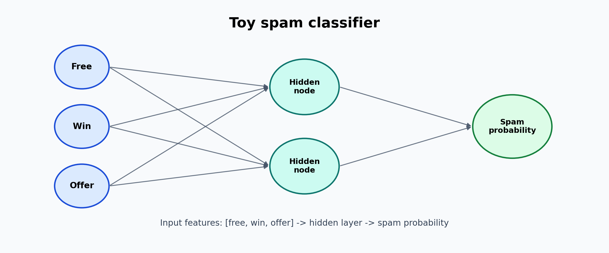
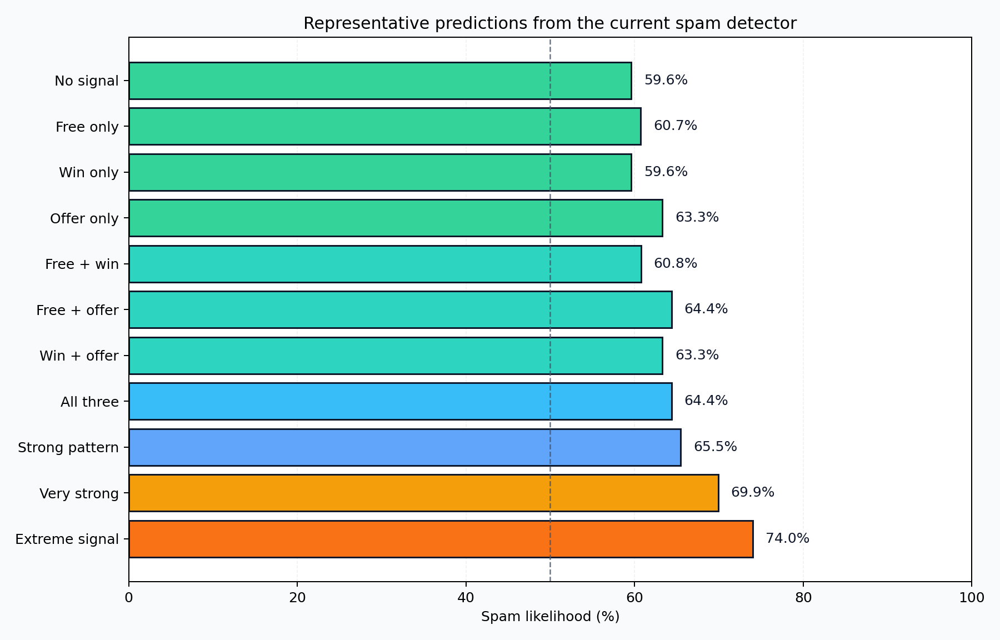

En liten klassifiseringsmodell som lærer å skille mellom mistenkelige og normale eposter.
Alt lagd fra bunnen uten rammeverk som bl.a. Pytorch for bedre forståelse.
ReLU, sigmoid og binary cross-entropy gjør at nettverket kan lære ikke-lineære mønstre.
Modellen gir en sannsynlighet for spam, og det blir lett å sjekke om den oppfører seg fornuftig.
Dette mini-prosjektet bruker en enkel struktur for et nevralt nettverk: tre input-funksjoner, et skjult lag og én outputnode som forutsier om input ser ut som spam.
Output er ligger på rekken <0.0, 1.0>, hvor 0.0 indikerer 0% sannsynlighet for spam, og 1.0 indikerer 100% sannsynlighet for spam.

Modellen bruker et lite syntetisk datasett bygget rundt tre enkle trekk (features):
Ta f.eks. en kort e-post som:
“Congratulations! You have won a free offer today. Claim your prize now!”
Før modellen ser den, forenkles teksten til et antall mistenkelige ord:
Dette konverteres deretter til en funksjonsvektor: [1, 1, 1].
Det nevrale nettverket prosesserer dette inputet og gir en sannsynlighet, for eksempel rundt 85–90 % sannsynlighet for spam for en melding med flere mistenkelige signaler.
Denne visualiseringen viser noen representative eksempler modellen blir bedt om å klassifisere. Jo mer mistenkelig kombinasjonen av ord er, desto høyere blir sannsynligheten for spam. Det er en rask sanity check for å se om nettverket oppfører seg på en fornuftig måte for enkle eksempeldata.

NB! Data fra diagram er nesten hovedsakelig "dummy data" / syntetisk data, så resultat kan være langt ifra det som er realistisk fra en slik modell.
Dette prosjektet er spesielt godt for å demonstrere hvordan et nevralt nettverk faktisk fungerer, uten å skjule alt bak et rammeverk med ferdilaget og forenklede funksjoner. Her er tre sentrale deler av koden som viser den tekniske kjernen.
Dette er selve læringsmekanismen: først beregner nettverket en prediksjon, så går det bakover gjennom lagene for å finne feilen, og oppdaterer vektene. Koden viser hvordan hver neuron får en forutsetning (Z), en aktivering (A) og til slutt en feildifferensial som brukes til å justere vektene.
def forward(self, X):
pre_activations = []
activations = [X]
for i in range(len(self.weights)):
Z = activations[-1] @ self.weights[i] + self.biases[i]
pre_activations.append(Z)
if i == len(self.weights) - 1:
A = self.output_activation.func(Z)
else:
A = self.hidden_activation.func(Z)
activations.append(A)
return pre_activations, activations
def backward(self, y_true, pre_acts, acts):
N = y_true.shape[0]
dA = self.loss_function.derivative(y_true, acts[-1])
for i in reversed(range(len(self.weights))):
if i == len(self.weights) - 1:
dZ = dA * self.output_activation.derivative(pre_acts[i])
else:
dZ = dA * self.hidden_activation.derivative(pre_acts[i])
dW = acts[i].T @ dZ / N
dB = np.sum(dZ, axis=0) / N
self.weights[i] -= self.lr * dW
self.biases[i] -= self.lr * dB
dA = dZ @ self.weights[i].THer ser vi at modellen faktisk er skrevet for å være generell, ikke bare “spam-klassifiserer”. Ved å pakke aktiveringsfunksjonen og tapfunksjonen inn i små containere kan samme nettverk bytte mellom ReLU, sigmoid, softmax og binary cross-entropy uten å måtte skrive helt ny kode hver gang.
class Activation:
def __init__(self, func, derivative):
self.func = func
self.derivative = derivative
class Loss:
def __init__(self, func, derivative):
self.func = func
self.derivative = derivative
relu_act = Activation(relu, relu_derivative)
sigmoid_act = Activation(sigmoid, sigmoid_derivative)
bce_loss = Loss(binary_cross_entropy, derivative_bce)Dette er den lille, men veldig viktige funksjonsbiblioteket som gjør modellen operasjonell. ReLU brukes i det skjulte laget for å introdusere ikke-linearitet, sigmoid brukes i output-laget for sannsynlighetsberegning, og binary cross-entropy måler hvor langt prediksjonen er fra den riktige klassen.
def relu(x):
return np.maximum(0, x)
def sigmoid(x):
return 1 / (1 + np.exp(-x))
def binary_cross_entropy(y_true, y_pred):
y_pred += 1e-15
return -np.mean(y_true * np.log(y_pred) + (1 - y_true) * np.log(1 - y_pred))